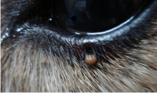

** Topic 2013年 3月**

 飼い主のみなさまもご注意を！！
飼い主のみなさまもご注意を！！
〜重傷熱性血小板減少症候群(SFTS)〜

暖かくなってきて、よくお目見えするのが、この写真のマダニ。
今年も、ぼちぼち気温が高くなり、『ダニがついた！』と、患者さんが来院されます。
今年は、このマダニ、例年より注目されております。というのも、このマダニを媒介とした感染症により、昨年秋に、成人女性が亡くなったと厚生労働省の発表があったからです。
この感染症は、『重傷熱性血小板減少症候群』(SFTS)で、国内での確認は初めてでした。2011年に特定された新種のウイルスが原因で、このウイルスを保有しているマダニに咬まれることなどで感染して引き起こされる病気。感染すると、血液中の血小板や白血球の減少し、発熱、吐き気、下痢などの症状がみられる。いまのところ、有効な抗ウイルス薬はなく、対症療法が主な治療となっています。そのため、対応としては、マダニに咬まれないように、との注意が促されております。
マダニは、イエダニより大きく、国内では、青森以南の山野に広く生息しています。つくばでは、野山にはいらなくても、緑の多い公園をお散歩したときなどに、イヌネコにつくことも多いです。直接ダニに咬まれないよう注意するとともに、イヌ、ネコなど、身近なペットのダニ駆除予防を、しっかりしましょう！